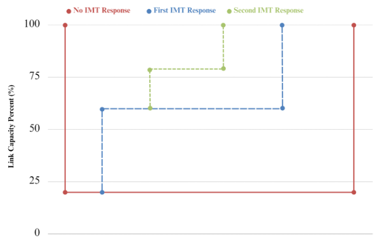
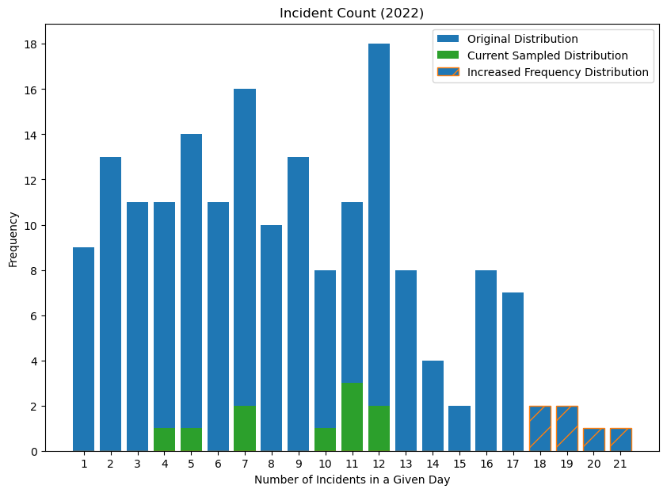

3 Methodology
3.0.1 3.1 Incident Response in MATSim
This section of the methodology outlines the development of the model for the Utah IMT Optimization project. As stated in sections 2.2 and 2.3 of the literature review, the model is designed to effectively demonstrate the effects of traffic incidents on the overall traffic flow, and the subsequent influence of Incident Management Teams (IMTs) when integrated into the model.
We explain how incidents and IMT vehicles are represented within the MATSim model and discuss several adjustments made to the behavior of MATSim agents within the model configuration. Our approach to incident modeling primarily draws from and expands on the research of (kaddoura2016?). For a more detailed understanding, refer to The Multi-Agent Transport Simulation (MATSim) textbook.
3.0.1.1 3.1.1 Network Change Events
Each link in a MATSim network possesses specific attributes, such as link type, length, number of lanes, free-flow speed, and capacity. To simulate unexpected events, it’s essential to adjust one or more of these parameters at a specific time during the simulation. The capacity to modify a network, as referred to in the MATSim textbook, is known as a Time-Dependent Network, and unforeseen incidents or any factors that alter the network’s characteristics are termed Network Change Events (NCEs).
Section 6.1 of the MATSim textbook outlines how to adapt the parameters of a MATSim configuration file to allow for time-variant network attributes and how to implement network change events. These events can modify a link’s free-flow speed, number of lanes, or capacity. To activate a network change event, the system needs to know the time of the event (startTime), the affected link(s) (link refID), the nature of the change (free-flow speed, lanes, or capacity), and the specific value of the change.
Within the context of the Utah IMT optimization problem, changes are triggered when an incident is reported and when an IMT arrives at the affected link. These changes will influence the link’s capacity based on the incident data, which will be discussed in more detail in section 3.2.3. Unlike (kaddoura2016?)’s work, this study does not consider long-term capacity reduction events such as road construction, focusing solely on short-term incidents like accidents or vehicle breakdowns. The diminished capacity of a specific link would typically affect both regular agents (those included in the baseline simulation scenario) and IMT agent vehicles. If a subnetwork is utilized, IMT trucks, similar to other emergency vehicles like ambulances and firetrucks, would be less affected by congestion caused by daily traffic or unexpected incidents.
The implementation of the MATSim within-day replanning module plays a significant role in the rerouting of other agents on the road after an incident.
3.0.1.2 3.1.2 Within-Day Replanning
The concept of within-day replanning is applied to a certain extent in the model, as detailed in Chapter 30 of the MATSim textbook. However, I plan to delve deeper into this concept to ensure its correct application within our study. Subsequently, I will refine the wording of this section to accurately convey its implementation within our model.
3.0.1.3 3.1.3 Vehicle Assignment
When an incident occurs within the MATSim simulation, one or more Incident Management Team (IMT) vehicles are dispatched to manage the situation. A dispatch algorithm determines the most suitable vehicle for the task. The model can select the IMT unit(s) based either on a least-cost path calculation that factors in congestion and link speed or the shortest path between the vehicle’s location and the incident site. The chosen method will partially depend on how swiftly the IMT units can navigate through traffic. If a subnetwork is utilized, the IMT trucks would be less affected by congestion and free-flow speed, potentially making the shortest path calculation more suitable. Conversely, if an IMT moves through traffic like a standard vehicle, using a least-cost path calculator within the simulation would likely be the preferred option.
In the context of this project, the Utah IMT system operates in tandem with the Utah Highway Patrol system under the same dispatch service. IMTs in Utah are equipped with sirens and flashing lights similar to those on a highway patrol vehicle, and they operate within specific zones. For instance, there are multiple zones in Salt Lake and Davis Counties where IMT vehicles are distributed. Given that IMTs can navigate traffic like other emergency vehicles, the Utah Highway Patrol dispatch requests the nearest available vehicle(s) to respond to an incident when it occurs. It’s worth noting that due to limited resources, an incident ideally requiring assistance from 2 or 3 IMT units may only receive one vehicle, potentially leading to longer management or cleanup times.
3.0.1.4 3.1.4 Incident Response
As discussed in Section 3.1.1, a critical element in simulating the effects of incidents on agents within the MATSim network is Network Change Events (NCEs). This mechanism, which illustrates how incidents can impact user behavior, will also be used to demonstrate how the reactions of IMTs influence agents’ travel times and paths.
Once the vehicle assignment algorithm dispatches one or more IMT units to an incident, a decision must be made on what percentage of the incident link’s capacity is restored upon the IMT’s arrival. An arriving IMT can either hasten the restoration of the capacity to normal levels or enhance the capacity by a certain percentage ‘X.’ These adjustments hinge on the available incident data and findings from other research regarding IMT effectiveness.
Kim et al. (2012-04-01, 2012-04) discusses the cost-benefit ratio of different IMT fleet sizes, and other studies have attempted to gauge the duration of an incident’s impact without an IMT and contrast that with the length of time that an incident affects traffic when an IMT is dispatched. Given the correct information or building upon certain assumptions, one can establish a capacity restoration factor to be applied upon a vehicle’s arrival at an incident site.
Figure 4 below provides a potential example of how an incident, with no IMT response, might affect a network in comparison to scenarios where one IMT responds, followed by the response of a secondary unit.

3.0.2 3.2 Simulation Scenarios
Loading incidents and IMT response vehicles into the Utah Optimization model is a significant aspect of this project’s methodology. Another crucial element involves running scenarios to quantify the impact of both incidents and IMT arrivals. Various factors influence these quantitative comparisons. These include the type of network and plans files used during the simulation, the processed and selected incident data, and the locations and quantities of IMT vehicles included in the simulations. Each of these components builds on prior research related to IMTs in Utah, MATSim studies on Demand Responsive Transport (DRT), and transportation modeling research conducted by the Wasatch Front Regional Council in various traffic modeling projects throughout Utah.
3.0.2.1 3.2.1 Wasatch Front Base Scenario
In this section, we aim to outline the origins of the network and plans file and their usage in other research conducted by the Wasatch Front Regional Council (WFRC). Dr. Macfarlane has provided information about the source of these plans. I will review his notes before expanding this section. The network and plans have been calibrated and represent a typical day’s traffic in the regions where most IMT vehicles operate.
3.0.2.2 3.2.2 Incident & IMT Scenario
We will detail the variety of scenarios we executed in this section, specifying the types based on the number of incidents and the quantity of Incident Management Teams (IMTs) involved. We’ll clarify why we chose to execute the specific number of tests and scenarios. Brynn has prepared a table detailing these different scenario types, which we could include here if desired.
Essentially, we have six scenarios:
1. A baseline with no IMTs.
2. A baseline with no IMTs and increased incident frequency.
3. Current IMT resources with current incident frequency.
4. Current IMT resources with increased incident frequency.
5. Improved (added) IMT resources with the current frequency of incidents.
6. Improved IMT resources with increased frequency of incidents.
Our goal is to run at least ten days of simulations for each scenario.
3.0.2.3 3.2.3 Incident Data
<< TO DO: summarize the methodology used by Joel Hyer and to describe where our incident data came from >>
3.0.2.4 3.2.4 Incident Sampling
In order to determine how many incidents should be modeled in a given day, we performed an analysis on the Incident data we receieved in order ot create a distribution of incident count frequency to sample from. The code we wrote utilized the Pandas library in Python to read the data into a data frame and removes duplicate entries based on a unique identifier column. The code then converts the ‘Call Received Time’ column to a DateTime format and creates a new ‘Date’ column to extract the date portion of the timestamp. The data frame is then grouped by date and call type, counting the number of incidents for each group. This information is organized into a new data frame where rows represent dates, columns represent call types, and cell values indicate the number of incidents. The total number of incidents per date is calculated, and the data frame is grouped again based on the total number of incidents. Finally, the frequency of each incident count is calculated, resulting in a data frame that represents the occurrence frequency of a specific number of incidents per day.
These frequencies are used to create a weighted distribution for sampling. A random seed value is generated and printed for the sake of reproducibility. The code then performs random sampling by selecting ten days from the distribution of incident numbers based on the calculated frequencies. The sampled days are stored in the ‘sampled_days’ list. This list contains ten values that will be used in MATSim to determine how many incidents to generate in the simulation for ten different scenarios.
